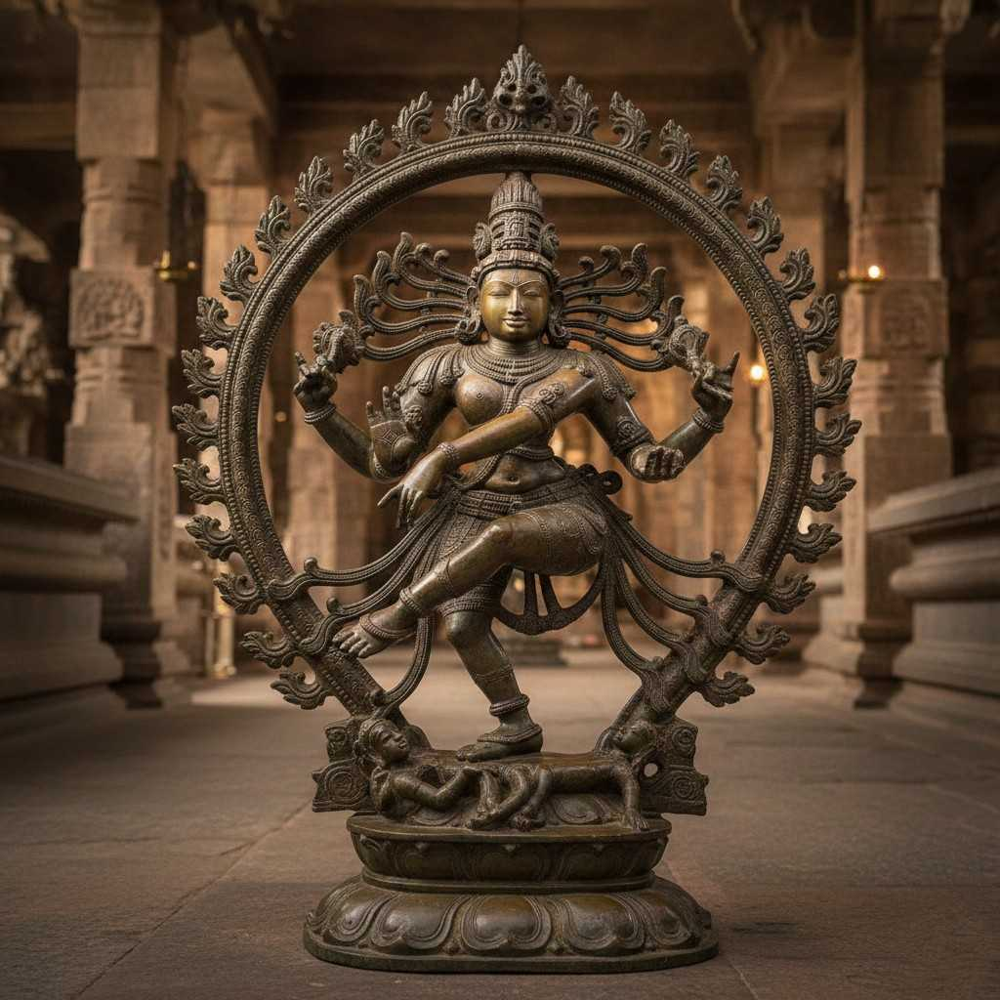
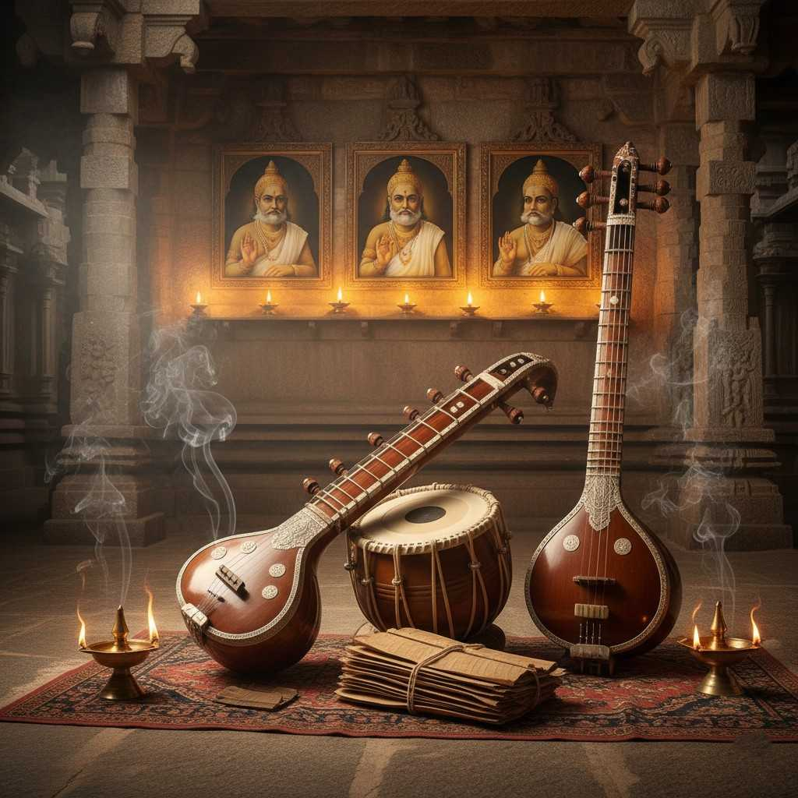
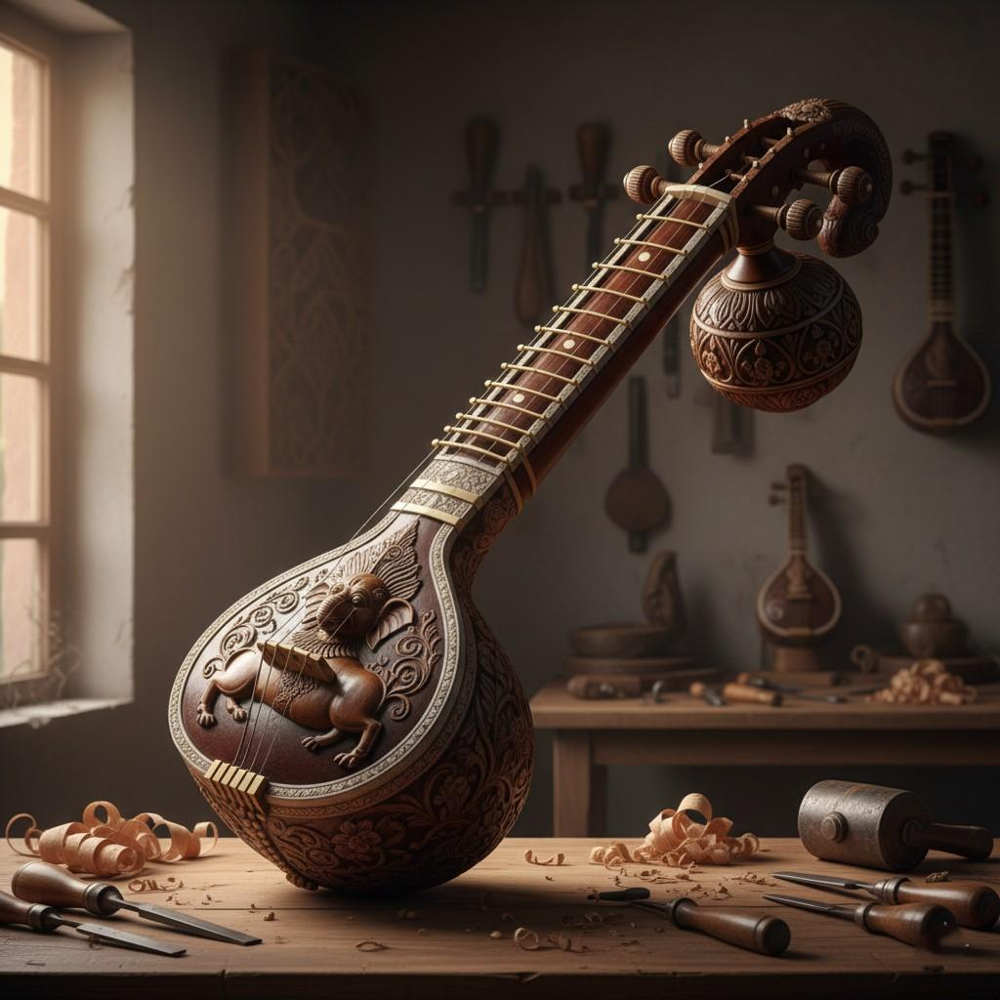

Vibrant Arts, Music, Dance & Handicrafts

Chola Bronzes
Exquisite lost-wax icons like Nataraja, embodying philosophy and grace.

Bharatanatyam
Classical dance form revived in Thanjavur, blending devotion, rhythm, and expressive storytelling.

Carnatic Music
Land of the Trinity—Thyagaraja, Muthuswami Dikshitar, and Syama Sastri.

Thanjavur Paintings
Rich gold foil paintings depicting gods, known for depth, brilliance, and devotion.

Veena Craftsmanship
Handcrafted Saraswati Veenas admired worldwide for tonal purity and elegance.

Thanjavur Dolls
Traditional bobble-head dolls symbolizing joy, balance, and folk artistry.
Thanjavur nurtured Carnatic music (Thyagaraja's birthplace nearby), Bharatanatyam revival, Veena craftsmanship, paintings, dolls, and pith work— a living cultural ecosystem celebrated globally.